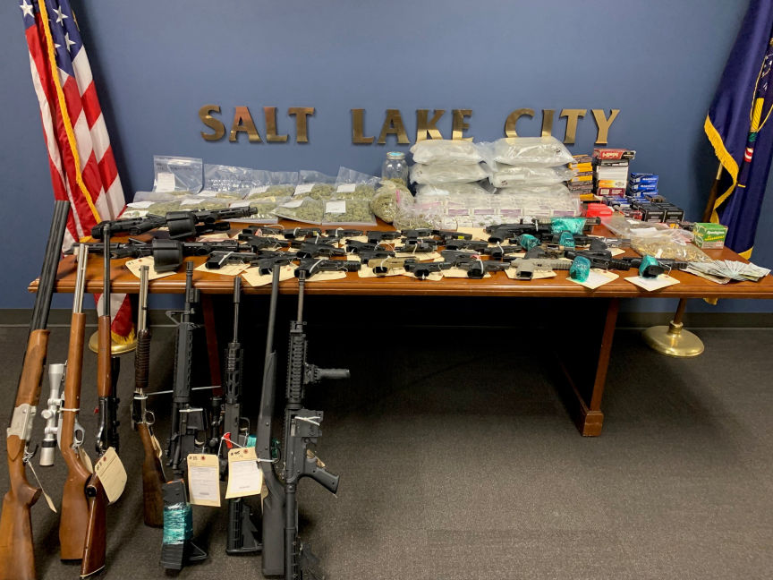
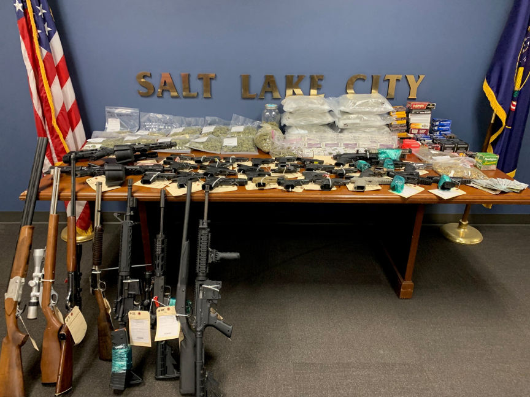

Illicit Weapons and Cannabis Reseller Imprisoned
A Utah man was sentenced to 64 months in prison for purchasing and reselling weapons without a license and reselling marijuana purchased on the dark web.

According to court documents, 41-year-old Phillip Mahe Taufa admitted he illegally purchased and resold over 50 firearms between February and November 2021. He also admitted he used and resold cannabis he bought through an undisclosed dark web marketplace.
The criminal complaint disclosed that investigators executed an anticipatory search warrant on Taufa's residence on November 9, 2021. The investigators found and seized 7.27 pounds of marijuana in two USPS priority mail packages, and undisclosed quantities of cannabis in containers. The investigators also confiscated 43 firearms, large quantities of ammunition, magazines, firearm purchase receipts, and $3,500 in cash.
On being questioned, Taufa told the cops that he had been purchasing marijuana on the dark web. He disclosed that the marijuana package found in his home by the investigators had been delivered earlier that day after he placed an order for one pound of marijuana. He said the bulk of the marijuana he purchased was for personal use and that he only resold approximately three ounces of it every week.
Taufa also admitted he had purchased over 50 firearms from individuals and licensed firearm dealers. He resold the firearms for double his purchase price. In some cases, he traded the weapons for marijuana and THC cartridges.
Taufa was consequently charged with multiple firearm and drug related offenses in a seven-count indictment.
On March 20, 2023, a court sentenced him to 5 years and 4 months in federal prison and three years of supervised release. Taufa was also ordered to pay a special assessment of $600.

According to court documents, 41-year-old Phillip Mahe Taufa admitted he illegally purchased and resold over 50 firearms between February and November 2021. He also admitted he used and resold cannabis he bought through an undisclosed dark web marketplace.
The criminal complaint disclosed that investigators executed an anticipatory search warrant on Taufa's residence on November 9, 2021. The investigators found and seized 7.27 pounds of marijuana in two USPS priority mail packages, and undisclosed quantities of cannabis in containers. The investigators also confiscated 43 firearms, large quantities of ammunition, magazines, firearm purchase receipts, and $3,500 in cash.
On being questioned, Taufa told the cops that he had been purchasing marijuana on the dark web. He disclosed that the marijuana package found in his home by the investigators had been delivered earlier that day after he placed an order for one pound of marijuana. He said the bulk of the marijuana he purchased was for personal use and that he only resold approximately three ounces of it every week.
Taufa also admitted he had purchased over 50 firearms from individuals and licensed firearm dealers. He resold the firearms for double his purchase price. In some cases, he traded the weapons for marijuana and THC cartridges.
Taufa was consequently charged with multiple firearm and drug related offenses in a seven-count indictment.
On March 20, 2023, a court sentenced him to 5 years and 4 months in federal prison and three years of supervised release. Taufa was also ordered to pay a special assessment of $600.